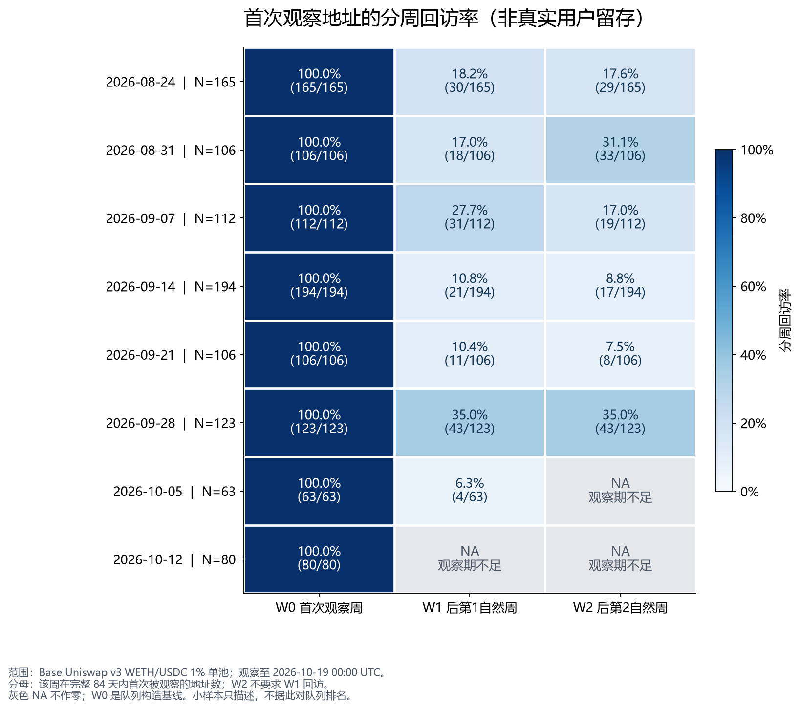
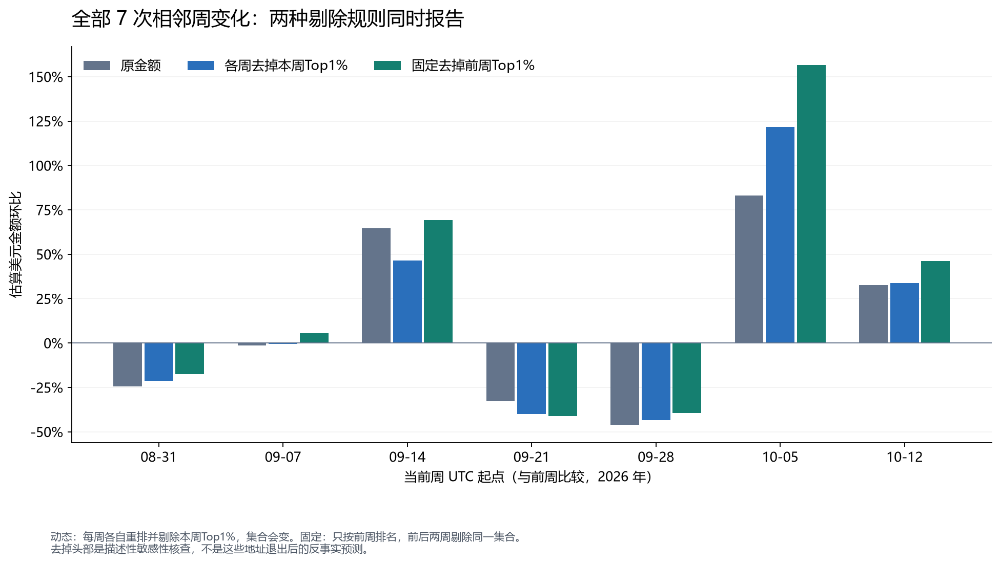

参与活动回升
最近完整周活跃地址326→521；重新出现组增加104个，占净增195个的53.33%。
RESEARCH 01 · ONCHAIN PRODUCT ANALYTICS
以Base上Uniswap v3 WETH/USDC 1%费率池为例，拆解参与活动、首次观察地址回访与交易集中度，判断哪些结论足以支持运营研究。
01 / QUESTION
协议交易次数、地址数量和交易金额可能朝不同方向变化。研究把这个问题拆成三部分：活跃地址的构成是否改变；首次观察地址在后续自然周是否再次出现；金额在少数发起地址间是否高度集中。
数据覆盖84天，共15,123条Swap事件、14,300笔去重交易、2,086个交易发起地址。前28天作为历史缓冲，后8个完整周展示。分析使用父交易的from字段作为地址代理，不将其等同于人数或网站访客。
02 / FINDINGS
最近完整周活跃地址326→521；重新出现组增加104个，占净增195个的53.33%。
统一6个成熟队列，154/806在下一自然周回访；W2为149/806，即18.49%。
最近周金额Top1%向上取整为6个地址，贡献18.61%的USDC侧估算金额。
03 / ACTIVITY

最近周活跃地址增长59.82%，交易数增长133.96%，估算金额增长32.51%。三种规模指标不同步。将地址按首次观察、连续活跃、间隔后重新出现划分后，三组差额分别为+17、+74、+104。
重新出现组是本次活动构成的重要线索。组内成员每周变化，这种算术拆解不能证明召回营销有效；后续需要跨池活动、交易间隔和真实触达证据。
04 / ADDRESS RETURN

全部成熟W1为158/869，全部成熟W2为149/806，分母覆盖不同队列。统一为同一批806个地址后，W1为19.11%，W2为18.49%。不能直接比较不同成熟度总体，或将每队列百分比简单平均。
05 / CONCENTRATION
最近周原估算金额增长32.51%。各周分别剔除该周金额Top1%地址后，剩余金额增长33.66%；固定前周4个头部地址，从两周同时剔除后，剩余金额增长46.24%。

按交易数独立排名的Top1%贡献24.88%的交易；按金额选出的6个地址贡献21.96%的交易。这两组不能混用。集中度必须同时说明度量、总体、取整和排名规则。
06 / IMPLICATIONS
优先研究重新出现地址的交易间隔和路由背景；先补充跨池证据，再考虑召回研究。不要把构成差额当成渠道贡献。
补充同协议其他池的活动，再结合费用、失败交易及授权产品漏斗研究体验问题。当前地址队列不是产品用户级7日留存。
同时呈现活跃地址、成熟回访、金额与交易数集中度，并保留两种敏感性规则。没有运行运营实验，建议尚无因果效果验证。
07 / METHOD & QUALITY
研究限定于Base Uniswap v3 WETH/USDC 1%费率池。金额是交换片段估值，不是净流入或收入；未识别真实用户身份，未声称剔除机器人或洗量。
08 / EXPLORE THE EVIDENCE
图表与结果来源：已归档分析的原始结果表。网站只作展示编排，不新增研究样本或改变计算口径。
RESEARCH 02 / FINANCIAL PRODUCT
五只产品、三个窗口，从费用与跟踪表现走向基金比较工具。
阅读ETF研究 ↗DISCUSS THE WORK